Grating interferometry and Compton scattering
New bunker 4
- approved up to 160 kV (custom controller chip)
- thicker beam stop needed for higher voltage
- mandatory dosimeter inside bunker 5
Tube operation
- turn key to the position 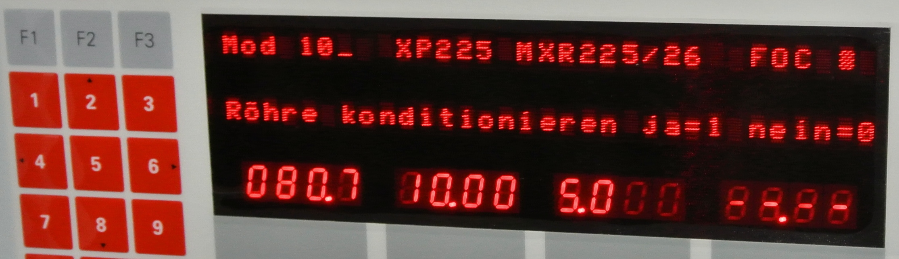
- press blue button on the door 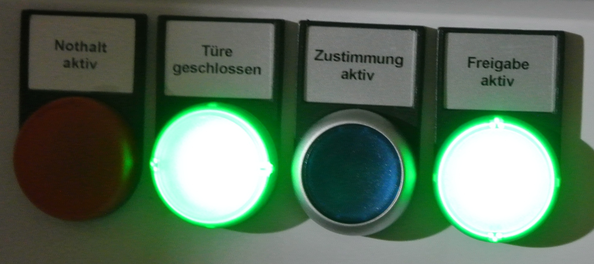
Tube operation
- warm up (don't know = 99 days) 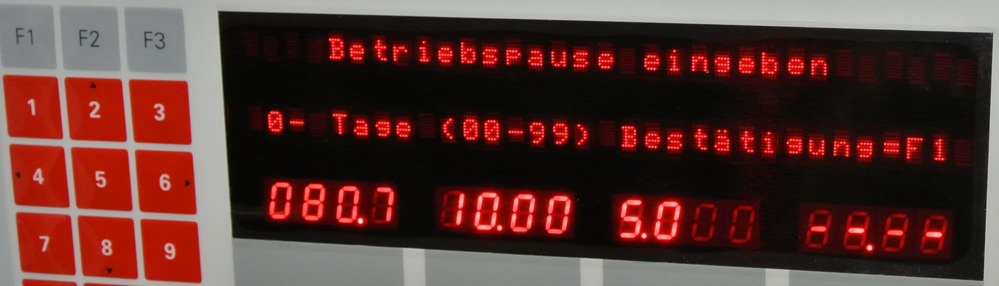
- choose max voltage you want to operate 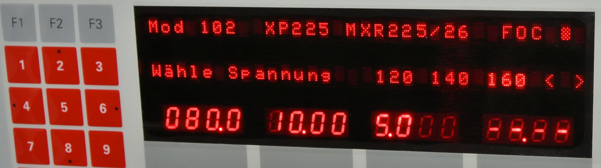
- press on
Tube maintenance
once per year, check both ends of the high-voltage cable: exactly two rings should be visible
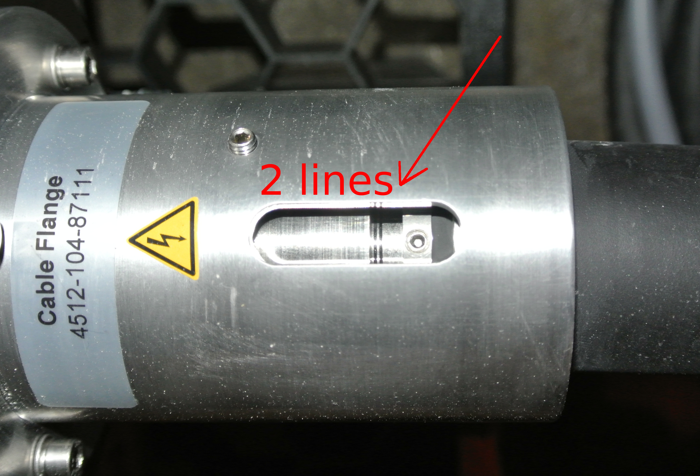
Troubleshooting
- check main switch behind the bunker
- check warning lamps: no beam if the lamp is broken!
-
contact: Manuel Gautschi
mg@controltech-ndt.ch
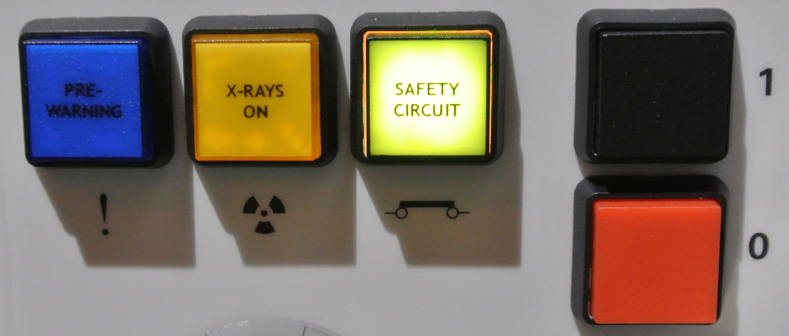
The Compton energy range
- bio $> 50$ keV
- heavy metals $>100$ keV
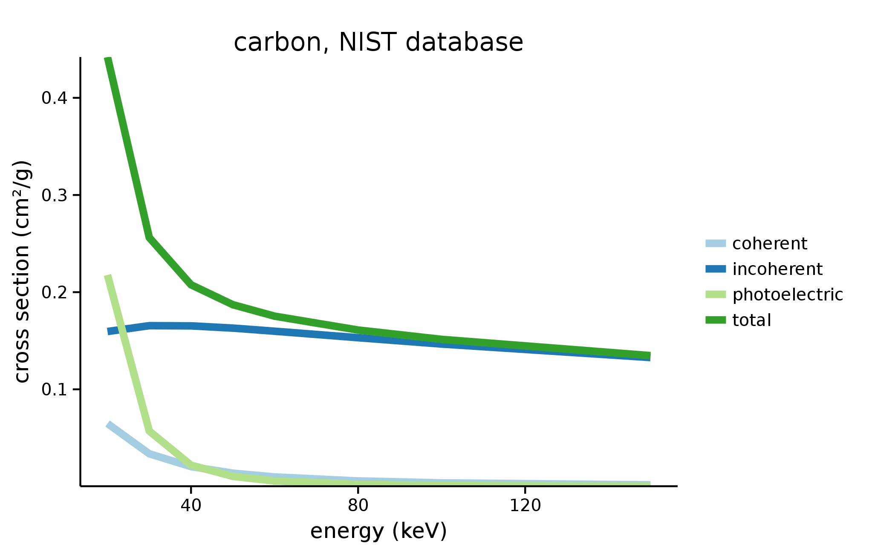
How does grating interferometry change?
Absorption
no Z information
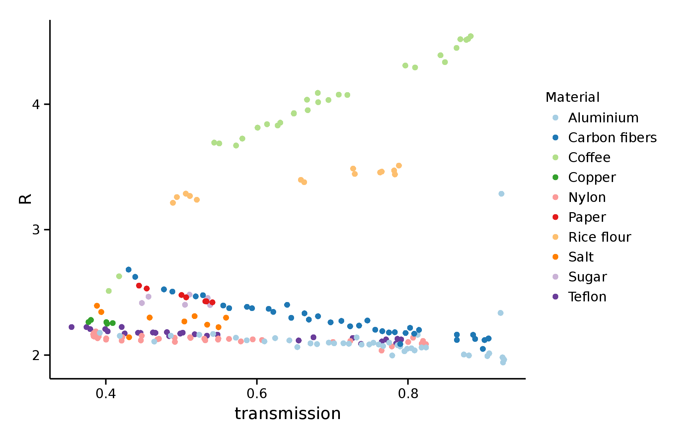
Differential phase
- same relationship with $\delta$
- see experiment
Dark field
Extension of Lynch et al. 2011
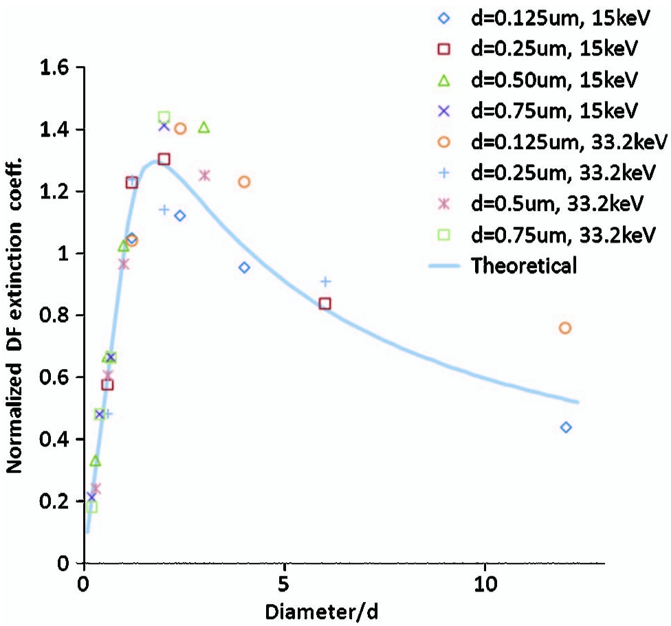
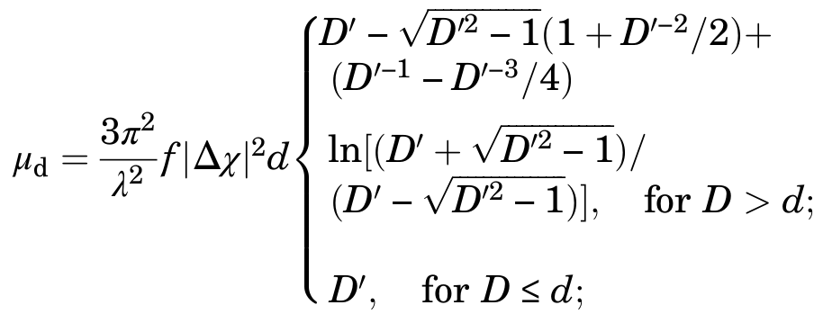
\[ R = \mu_d / \log A \]
Polychromatic model
- $R(\mathcal{E})$ for each energy from Lynch
- sum over spectral weights
- add fixed Compton contribution (energy and material independent)
- two fit parameters $R_0$, $C$
\[ R(\mathcal{E}) = R_0 + C \dfrac{|n|^2}{\beta} u(\mathcal{E}) \] \[ R = \sum_\mathcal{E} w(\mathcal{E}) R(\mathcal{E}) \]
Silica microspheres
0.16-7.75 µm
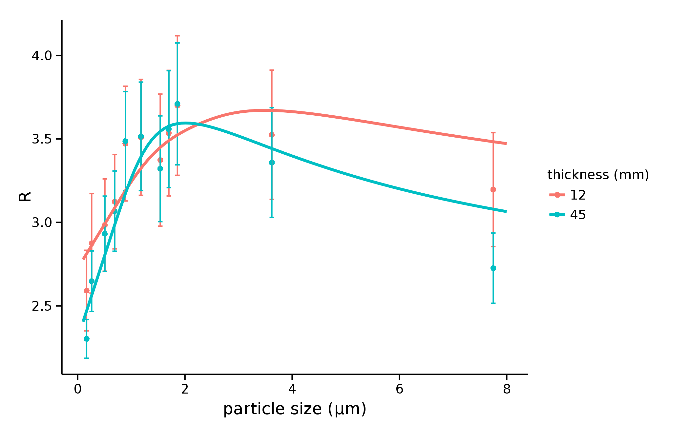
Beam hardening
12 mm
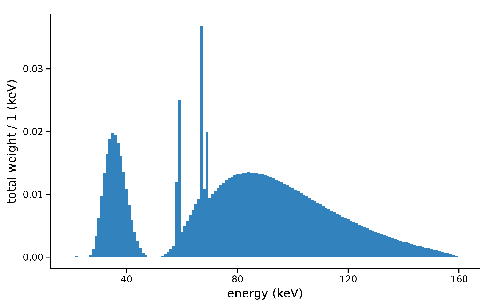45 mm
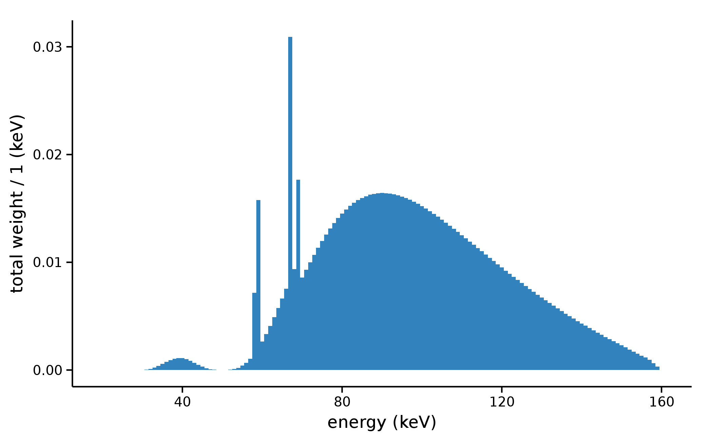Conclusions
- microstructural information from dark field, even on polychromatic sources
- phase and delta noisy because of the fast visibility reduction
- no Z from R
Applications
- lung microstructure size
- mammography microcalcs and fibers
- lower energy advised: 100 kVp, 40-60 keV design
- bones and strongly absorbing samples still a big issue for DPC